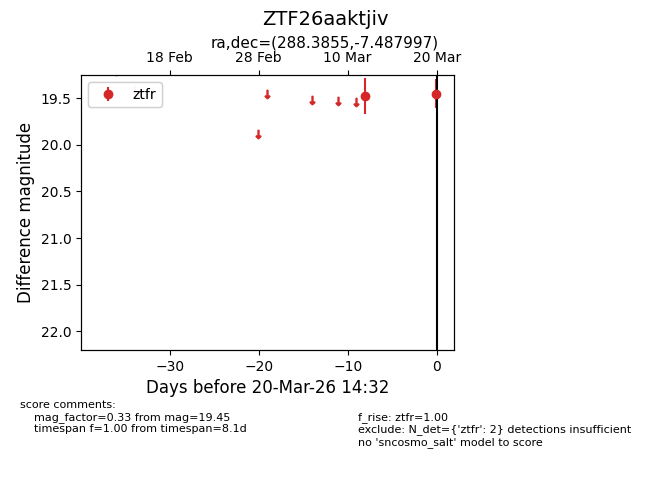
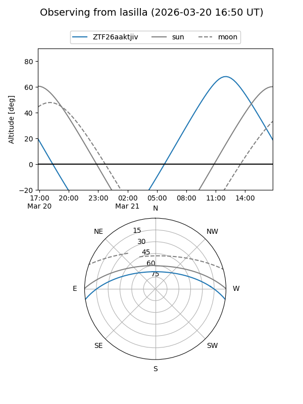
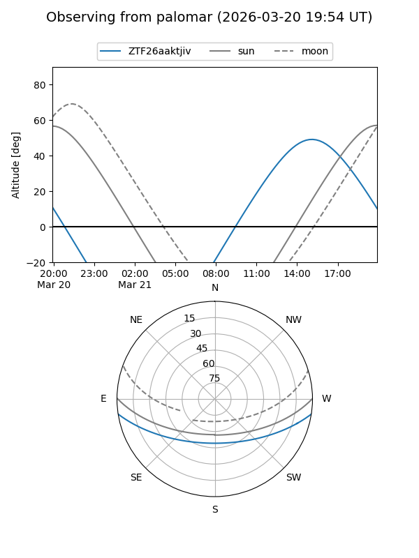

ZTF26aaktjiv
Target ZTF26aaktjiv at 2026-03-20 14:34
Aliases and brokers:
FINK: link
Lasair: link
ALeRCE: link
alt names
ZTF26aaktjiv (ztf,fink_ztf)
Coordinates:
equatorial (ra, dec) = 288.3855,-7.48800
equatorial (HMS+DMS) = 19:13:32.52,-07:29:16.79
galactic (l, b) = (28.7334,-8.30232)
Flags:
Photometry:
last ztfr=19.45
2 ztfr detections
Lightcurve

Visibility


Additional plots